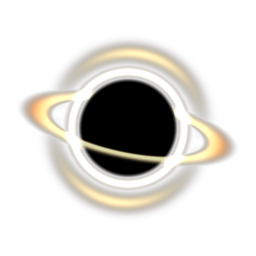
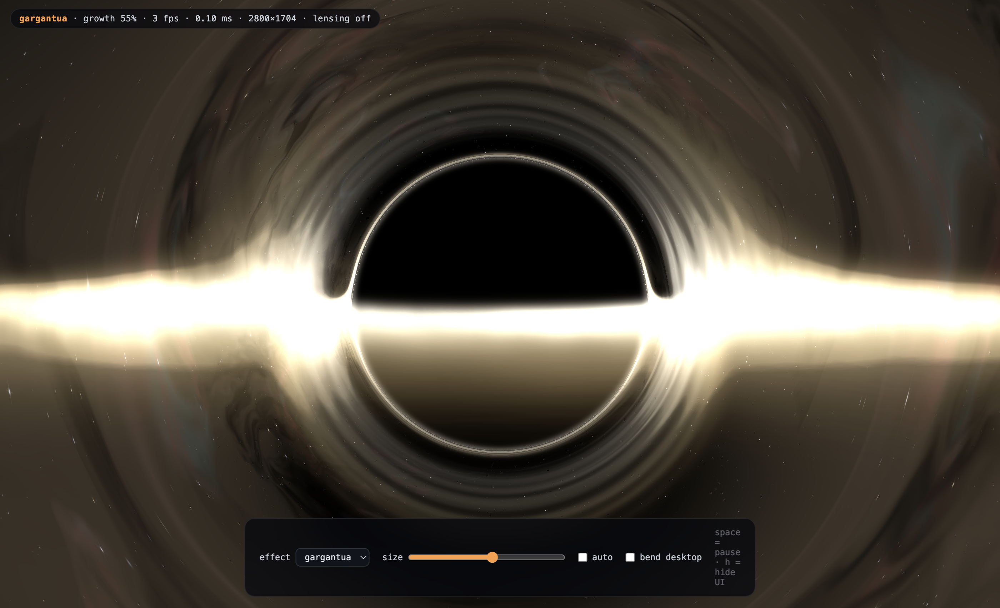
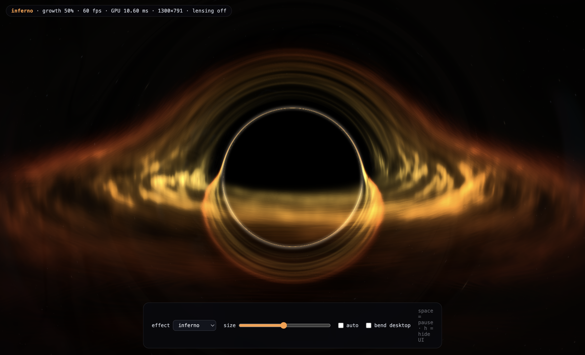
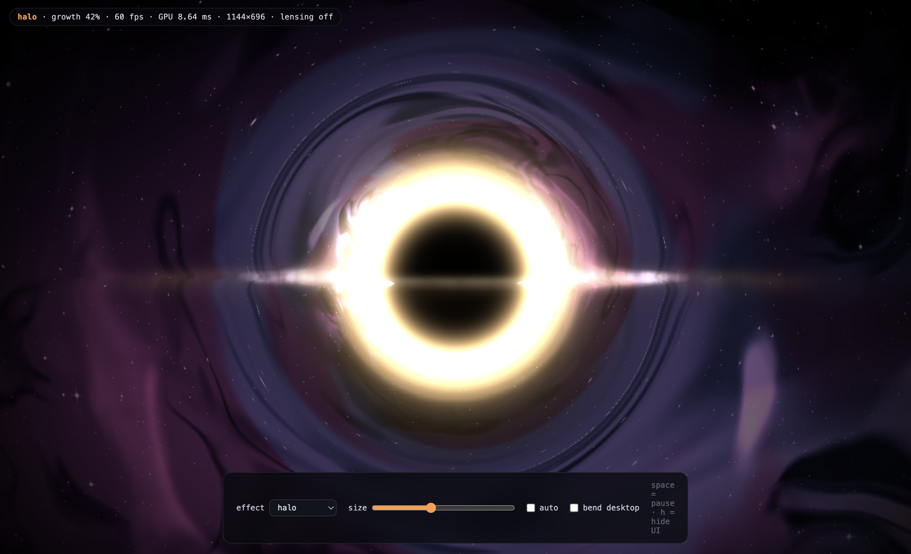

Nothing escapes the break.
A focus timer with a gravitational deadline. Work, and a black hole is born on your screen — it grows every second, bending your desktop around it, until it swallows the display and takes your break for you.
macOS and Windows · MIT licensed · no accounts, no telemetry
Every break reminder can be dismissed with one click, so every break reminder gets dismissed.
BlackHolock removes the click. Instead of a notification you can ignore, an object appears and grows. At first it is a few pixels wide and easy to work around. Five minutes later it has eaten everything. You do not decide to take the break — the break arrives, the way gravity arrives.
The pressure is visual and continuous rather than a sudden interruption, so you get several minutes of warning to reach a natural stopping point in whatever you are doing.

Photon paths integrated through curved spacetime, every frame, on your GPU.
For each pixel the shader integrates the orbit a photon actually
follows, d²u/dφ² + u = (3/2)·rs·u². The shadow, the
photon ring, the disc lensed over the top of the hole and the arcs
your own windows are bent into all fall out of that integration
rather than being painted on top of it.
The disc is symmetric on purpose. A complete render applies relativistic Doppler beaming, and Interstellar switched it off so the image would read clearly — BlackHolock exposes that decision as a slider rather than hiding it.


Not everyone wants a black hole.
The film's grade: cream and white, near edge-on, warm field behind it.
A simulation still in red and amber against empty black.
A vast dark sphere ringed with light in a cool nebula field.
Light split into rainbow bands as it bends past the horizon.
Droplets gather on the glass until the screen is not worth reading.
A drift climbs from the bottom until your work is buried.
The water rises and your work goes under, lit by caustics.
Cracks spread and the pieces stop lining up.
A calm dark disc with a thin corona. Minimal and quiet.
No object at all — the screen simply drains into darkness.
Which is most of the time.
The overlay windows are created at the start of a countdown and destroyed at the end of one, and the render loop is torn down the moment there is nothing to draw. During the 45 minutes of a focus period the app is a menu-bar icon and a timer.
While the effect is on screen the buffer scales itself toward a frame-time budget, so a hole covering the whole display costs about what one covering a corner does. Adaptive, measured with real GPU timing rather than guessed at.
There is nothing to leave.
No accounts, no servers, no analytics, no crash reporting, no identifiers. One settings file on your own disk. The only request the app can make is an optional version check you can switch off.
Screen frames used for the lensing effect never leave the GPU: never written to disk, never encoded, never transmitted. The capture stops the moment the effect leaves your screen.